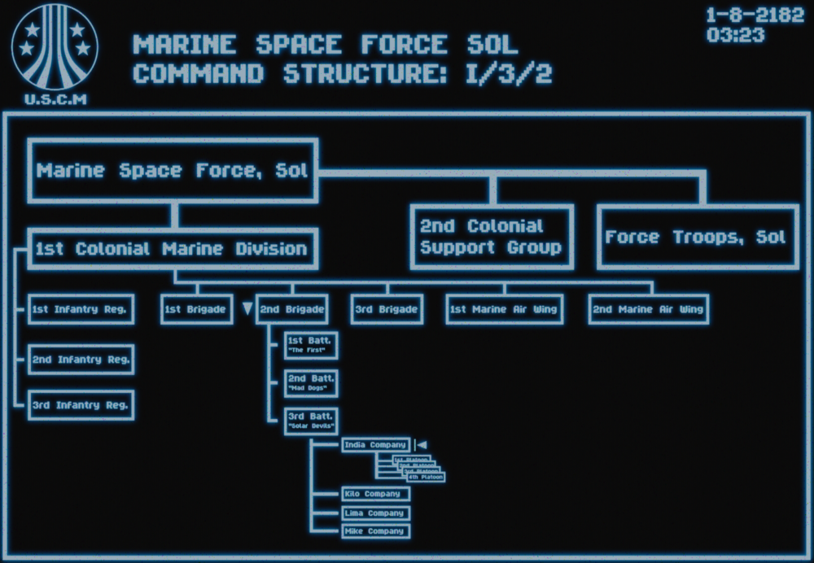

Лор и структура
На дворе 2182 год. Человечество продолжает экспансию в глубокий космос, а порядок в колониях обеспечивается сталью и кровью морской пехоты.
3-й батальон «Солнечные дьяволы»
3/2 (3-й батальон 2-я бригада) — одно из ключевых подразделений корпуса колониальной морской пехоты (ККМП).
- Базирование: Кэмп-Пендлтон, Калифорния, Земля.
- Статус: Действующее подразделение Объединенных Америк (ОА).
- Боевой путь: Батальон прошел через 5 крупных кампаний.
- Две из них закончились блестящей победой.
- Одна прошла без особых отличий.
- В двух последних батальон оказался на грани полного уничтожения, но выстоял.
Состав батальона
Батальон разделен на четыре роты:
- Рота «Индия» (I) — наша основная пехотная рота.
- Рота «Кило» (K) — пехота.
- Рота «Лима» (L) — пехота.
- Рота поддержки — логистика, снабжение и транспорт.
Взвод «Солнечные всадники»
Мы — 1-е отделение взвода «Солнечные всадники», входящее в состав роты «Индия».
Командный и вспомогательный состав
За логистику и общую координацию отвечает Командир отделения и подчиняющиеся ему специалисты поддержки:
| Специализация | Задачи и возможности |
|---|---|
| Экипаж корабля (Пилот) | Доставка десанта, медицинская эвакуация «на лету», десантирование бойцов с парашютом и огневая поддержка с воздуха (CAS). |
| Экипаж бронетехники | Управление и обслуживание бронемашин. Доступная техника: Танки, БТР и БМП. |
Структура пехотных групп
Наше отделение разделено на 4 оперативных отряда: Альфа Браво Чарли Дельта
Состав отряда (13 человек)
Каждый отряд — это автономная боевая единица, состоящая из двух огневых групп:
| Роль | Кол-во | Обязанности |
|---|---|---|
| Лидер отряда | 1 | Командование отрядом |
| Лидер группы | 2 | Командование огневой группой |
| Медик | 2 | Полевая медицина |
| Смартганнер | 2 | Тяжелая огневая мощь |
| Пехотинец | 6 | Основная ударная сила |
Для повышения огневой мощи и автономности в бою отряд разделяется на две группы по 6 человек:
- [3] Пехотинца — костяк группы, штурм и удержание позиций.
- [1] Медик — обеспечение выживаемости и реанимация прямо в бою.
- [1] Смартганнер — тяжелая огневая поддержка с системой автонаведения.
- [1] Лидер группы — полевое командование и координация целей.
Итого: 6 бойцов в группе. Лидер отряда осуществляет общее руководство обоими группами.
Иерархия ККМП
